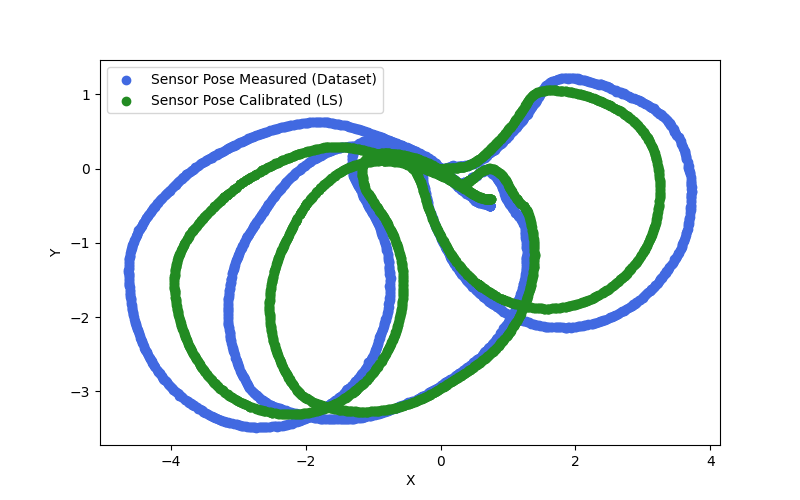
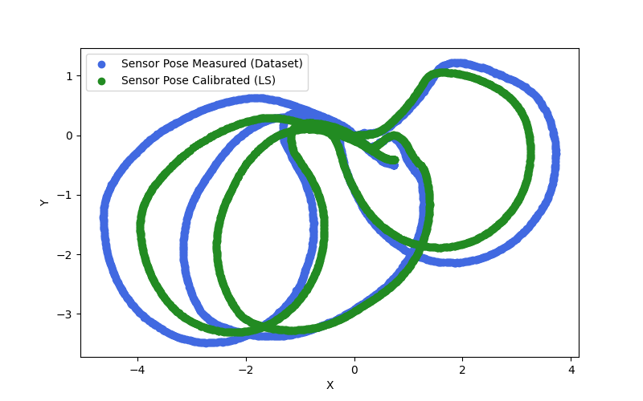

Overview
This project's aim is to calibrate the kinematic parameters and the sensor pose of a Tricycle robot.
1. Dataset
The dataset is composed by 2434 samples, each composed by the following elements:
- time ticks → time stamp of the measurement
- steering and traction ticks → reading of the encoders mounted on the robot
- robot global pose → odometry of the robot
- sensor global pose → odometry of the sensor
2. Kinematic Model
The vehicle is modeled like a FWD bicycle in SE(2), which is defined as follows:
3. State and Measurement Definition
4. Error and Jacobian Computation
5. Least Squares Algorithm
6. Results
 
